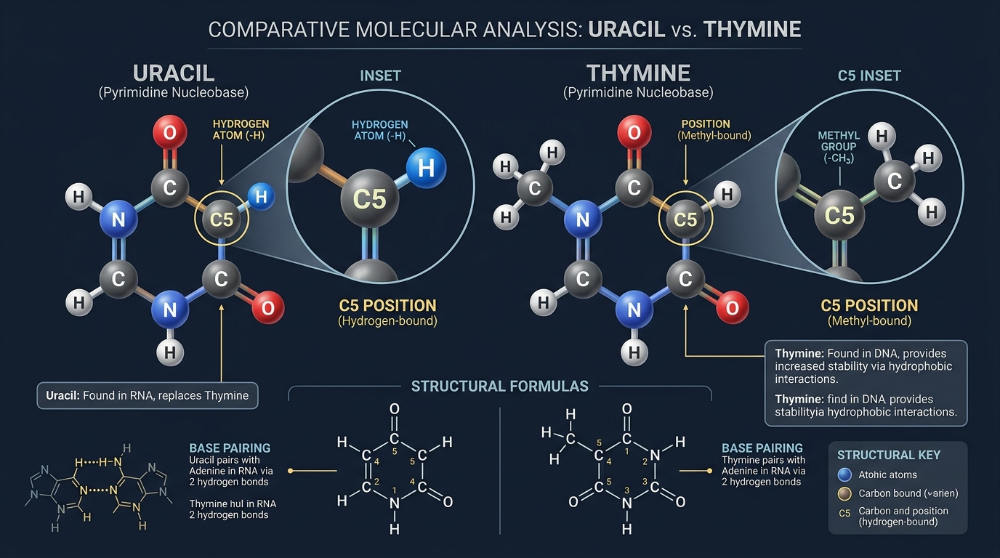
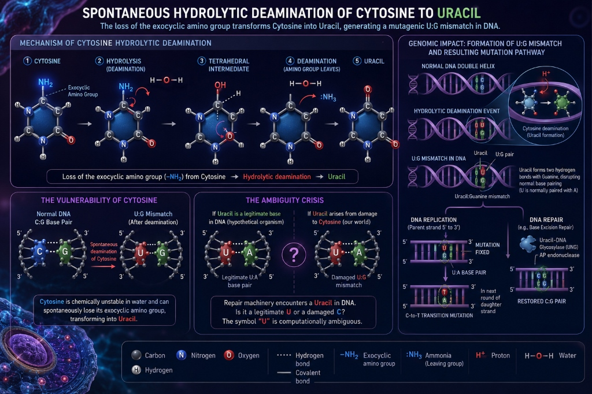
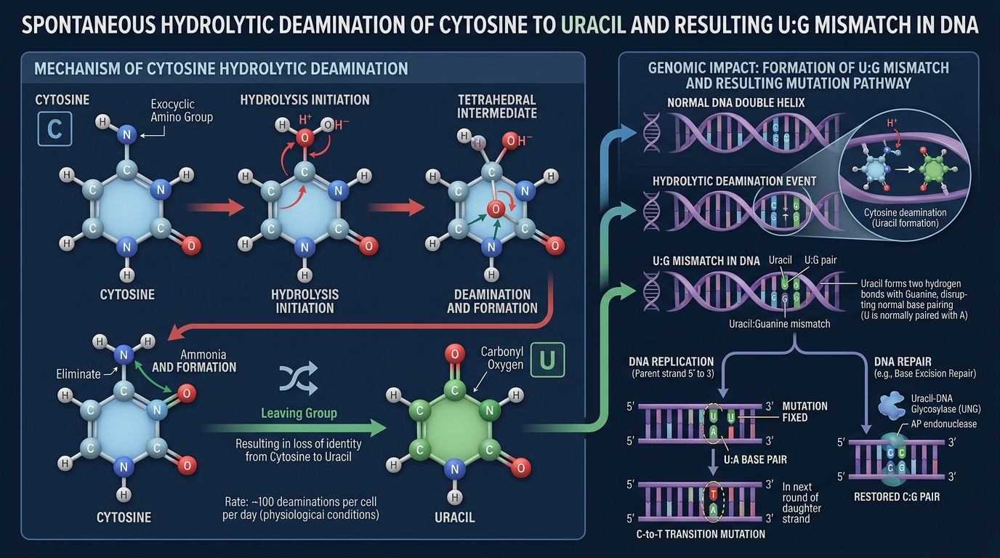
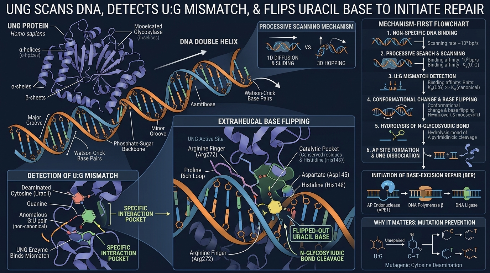
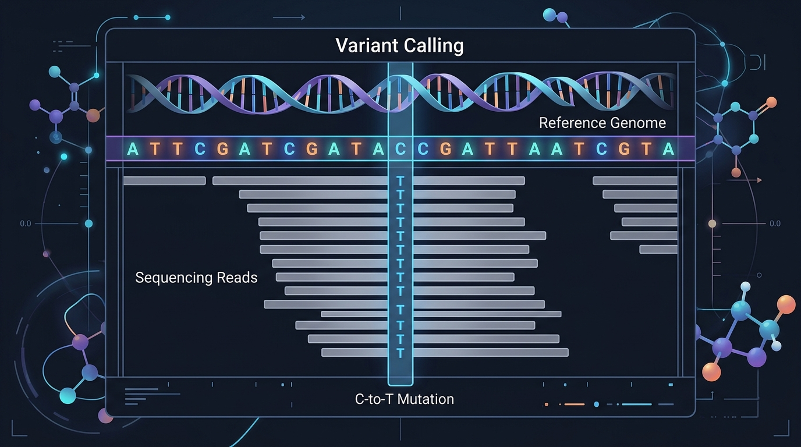

TOPIC 11
PYRIMIDINE SUBSTITUTION
Uracil vs. Thymine: How One Methyl Group Protects Genetic Information
WHY THIS MATTERS
DNA and RNA both use three of the same canonical bases:
The fourth pyrimidine differs:
At the sequence level, this looks like a simple alphabetic substitution (\(T \leftrightarrow U\)). But chemically:
That single methyl group has an important consequence for DNA damage recognition and repair. The deeper story is therefore not simply: DNA uses T; RNA uses U. It is:
DNA uses thymine partly because it makes a common form of spontaneous DNA damage detectable.
This is a beautiful example of molecular chemistry becoming an error-detection system.
WHERE DO THESE BASES FIT?
Both are pyrimidines.
More simply:
DNA → A T G C
RNA → A U G C
The distinction is therefore particularly interesting because T and U perform essentially the corresponding base-pairing role:
Yet DNA and RNA made different evolutionary choices about which base to use. Why?
The answer becomes clear when we examine cytosine damage.
The Chemical Distinction
DNA and RNA utilize near-identical alphabets, sharing Adenine (A), Cytosine (C), and Guanine (G). The divergence occurs exclusively in the pyrimidine base complementary to Adenine: RNA utilizes Uracil, whereas DNA utilizes Thymine.
At the sequence level, this appears to be a trivial alphabetic substitution (\(T \leftrightarrow U\)). However, at the molecular level, Thymine and Uracil are practically identical, separated only by a single functional group at the carbon-5 position of the pyrimidine ring.
The deeper story is therefore not simply: DNA uses T; RNA uses U. It is: DNA uses thymine partly because it makes a common form of spontaneous DNA damage detectable. This is a beautiful example of molecular chemistry becoming an error-detection system.

This single methyl group (-CH₃) radically alters the information-processing capabilities of the cell. The choice of Thymine in DNA is not an accident of chemistry; it is an elegant evolutionary strategy that transforms the molecular alphabet into an active error-detection system.
The Vulnerability of Cytosine
To understand why Thymine exists, we must examine a flaw in Cytosine. Cytosine is chemically unstable in water and undergoes spontaneous hydrolytic deamination—the loss of its exocyclic amino group (\(-\text{NH}_2\)).
When Cytosine loses this amino group, the molecule physically transforms into Uracil.

This means a normal DNA base can spontaneously transmute into a different base, creating an immediate threat to genomic integrity.
The Ambiguity Crisis
Imagine a hypothetical organism that uses Uracil in its DNA. Its genome would legitimately contain \(A-U\) base pairs.
However, when a Cytosine spontaneously deaminates, a previously stable \(C-G\) pair becomes a \(U-G\) mismatch. The repair machinery inspecting the genome would encounter a Uracil. But how could the machinery determine if that Uracil was meant to be there (a legitimate \(A-U\) pair waiting for replication), or if it was the corrupted footprint of a damaged Cytosine?
The symbol \(U\) would be computationally ambiguous.

Molecular Error-Detecting Codes
In computer science, an error-detecting code introduces structure that allows a system to recognize corruption. DNA has a biological analogue. By investing the metabolic energy to add a methyl group to Uracil—thereby creating Thymine—biology solved this information-theoretic crisis.
Because DNA uses \(A-T\) exclusively, Uracil is entirely foreign to the DNA alphabet. If a Cytosine deaminates into a Uracil, it creates a \(U:G\) mismatch. Because \(U\) is never supposed to exist in the archival genome, the repair machinery (specifically Uracil-DNA Glycosylase) doesn't need to guess the molecule's history. It simply operates on a binary rule:

The alphabet itself acts as an error-detecting checksum. By excluding Uracil from the legitimate code, DNA ensures that the most common form of chemical degradation announces itself loudly as a systemic anomaly.
The Pathway to Mutation
What happens if this error-detection system fails? If the repair machinery does not catch the deaminated Cytosine before the next round of DNA replication, the mutation becomes permanent.
During replication, the DNA polymerase reads the abnormal Uracil. Because Uracil's hydrogen-bonding face is identical to Thymine, the polymerase treats it as a \(T\) and inserts an Adenine (\(A\)) across from it. In the subsequent replication cycle, that Adenine will pair with a true Thymine.

Through this pathway, an uncorrected chemical lesion solidifies into a classic transition mutation. This mechanism explains why \(C \rightarrow T\) transitions are among the most overwhelmingly common spontaneous mutations observed across all domains of life.
One chemical reaction can therefore become a permanent sequence change if repair fails.
Why Does RNA Retain Uracil?
If Thymine is so structurally advantageous for preserving information, why doesn't RNA use it?
The distinction stems from different information strategies. DNA's primary imperative is long-term archival preservation, justifying the steep metabolic cost of synthesizing Thymine (which requires an extra, energy-intensive methylation step).
RNA, conversely, is generally a transient, high-turnover molecule (like mRNA) or a mass-produced structural component (like rRNA). The sheer volume of RNA synthesized by the cell would make universal Thymine usage metabolically exorbitant. Because RNA is frequently degraded and resynthesized rather than inherited across generations, it simply doesn't require a genome-wide, fail-safe error detection system. It prioritizes metabolic economy over archival integrity.
The Bioinformatics Consequence
When you work with genomic data, you are looking at the digital abstraction of these chemical processes. Understanding the chemical reality of Pyrimidine substitution prevents severe misinterpretations in dry-lab pipelines.
1. Variant Calling Abstractions
A variant caller observes read alignments and reports a C → T substitution in a VCF file. The algorithm treats this purely as an alphabetic change. However, as a bioinformatician, you must recognize the Biological Layer: that sequence variant is likely the fossil record of an uncorrected Cytosine deamination event. The algorithm describes what changed; the chemistry explains how it happened.
2. Analyzing Mutation Spectra
When analyzing cancer genomes or evolutionary phylogenies, you will often find substitution classes heavily enriched for C → T (and the complementary G → A on the reverse strand). These mutational signatures are direct readouts of DNA damage processes. Understanding the deamination rate allows researchers to use these transition mutations as "molecular clocks" to estimate evolutionary time or identify exposure to specific mutagens.
3. RNA-Seq vs DNA-Seq Interpretation
In an RNA-Seq dataset, finding Uracil (represented computationally as T or U depending on the aligner) is entirely normal. In DNA-Seq, Uracil is a catastrophic anomaly. Simply treating DNA and RNA as interchangeable string variables hides the fact that the alphabet itself encodes critical information about molecular identity and systemic damage detection.
The key takeaway: Molecular design encodes error-detection information. The choice of Thymine in DNA is an elegant evolutionary checksum that turns a spontaneous chemical flaw (deamination) into a recognizable anomaly, bridging physical chemistry, evolution, and the mutational signatures we analyze in bioinformatics.